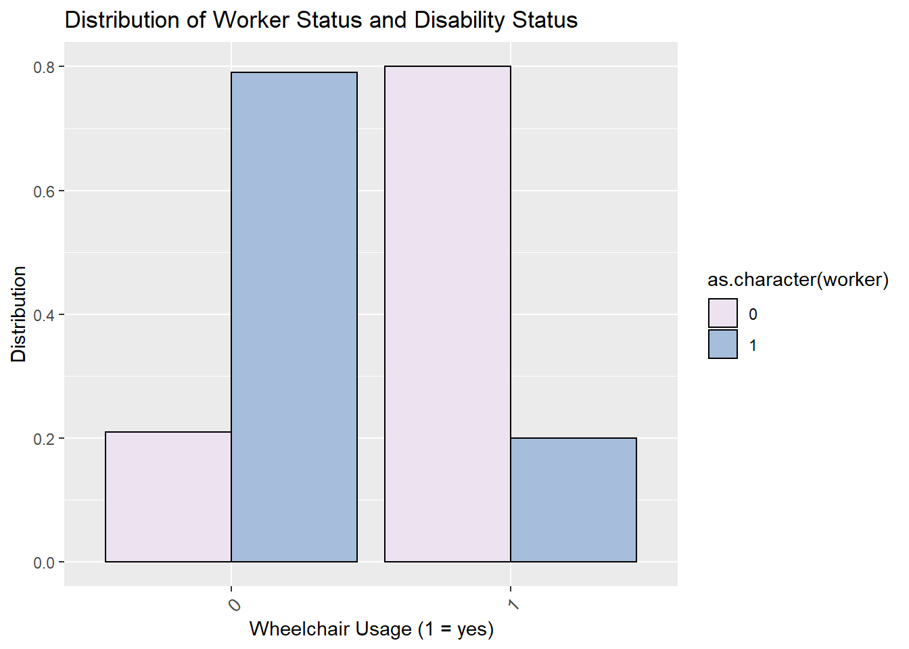

The National Household Travel Survey (NHTS) is conducted every 8-10 years or so, and samples nearly 300,000 americans to understand travel behavior. Each person answers questions about themselves and their household (i.e. employment status, income, age, gender etc.) and records information on their travel behavior each day of the study.
Each respondant is asked if they have any kind of disability that limits their transportation. If they respond yes, then they are asked which kinds of medical devices they use (i.e. wheelchair, cane, seeing eye dog, etc.). From these responses, we can label each person as wheelchair dependent or not.
mydata <- nhts_persons %>%
select(houseid, personid, r_age, educ, r_sex, r_race, wtperfin, medcond,
w_chair, w_scootr, w_mtrchr, worker, wrk_home, wkftpt) %>%
left_join(
nhts_households %>% select(houseid, msasize, hhfaminc),
by = "houseid"
) %>%
filter(r_age > 24 & r_age < 65) %>%
mutate(
worker = ifelse(worker == "01", 1, 0),
wheelchair = ifelse(
w_chair == "07" | w_mtrchr == "08" | w_scootr == "06", 1, 0
),
disability = ifelse(medcond == "01", 1, 0)
) %>%
select(-medcond, -w_chair, -w_scootr, -w_mtrchr) %>%
filter(!educ %in% c("-7", "-8", "-1"),
!r_sex %in% c("-7", "-8"),
!hhfaminc %in% c("-7", "-8", "-9"),
!r_race %in% c("-7", "-8")) %>%
mutate(
inc_cont = case_when(
hhfaminc == "01" ~ 5000,
hhfaminc == "02" ~ 12500,
hhfaminc == "03" ~ 20000,
hhfaminc == "04" ~ 30000,
hhfaminc == "05" ~ 42500,
hhfaminc == "06" ~ 62500,
hhfaminc == "07" ~ 87500,
hhfaminc == "08" ~ 112500,
hhfaminc == "09" ~ 137500,
hhfaminc == "10" ~ 175000,
hhfaminc == "11" ~ 200000,
),
male = ifelse(r_sex == "01", 1, 0),
college_plus = ifelse(educ %in% c("03", "04", "05"), 1, 0),
pop_million = ifelse(msasize %in% c("04", "05"), 1, 0),
wrk_home = ifelse(wrk_home == "01", 1, 0)
)
mydata %>% write_csv("data/updated.csv")
mydata %>% write_rds("data/mydata.rds")This study will evaluate the effect of being limited to a wheelchair on participation in the labor force. As shown in the figure below, there is a major imbalance in the number of individuals limited to a wheelchair who are employed versus unemployed, but could that be because of their age or because of their educational attainment level, instead of their dependence to a wheelchair? We will use logistic regression and control for multiple variables to see how wheelchair useage affects employment. We will then compare these effects to the effect of disability in general on the labor force.
# show plot of distribution (worker and wheelchair)
mydata <- read_rds("data/mydata.rds")
mydata %>%
group_by(worker, wheelchair) %>%
summarise(population = sum(wtperfin)) %>%
group_by(wheelchair) %>%
mutate(distribution = population/sum(population)) %>%
ggplot(aes(x = as.character(wheelchair), y = distribution)) +
geom_col(aes(fill = as.character(worker)), colour = "Black", position = "dodge") +
ggtitle("Distribution of Worker Status and Wheelchair Usage") +
labs(x = "Wheelchair Usage (1 = yes)", y = "Distribution") +
scale_fill_brewer(palette = "PuBuGn", direction = 2) +
theme(axis.text.x =
element_text(size = 10, angle = 45, hjust = 1, vjust = 1))
It is obvious that by having a wheelchair, liklihood of unemployment is much greater. However, other variables may be the cause of unemployment. Below is a summary table of the other variables we will consider in our model. The first compares the disabled population to the abled population, the second table compares the wheelchair user population to the able bodied population.